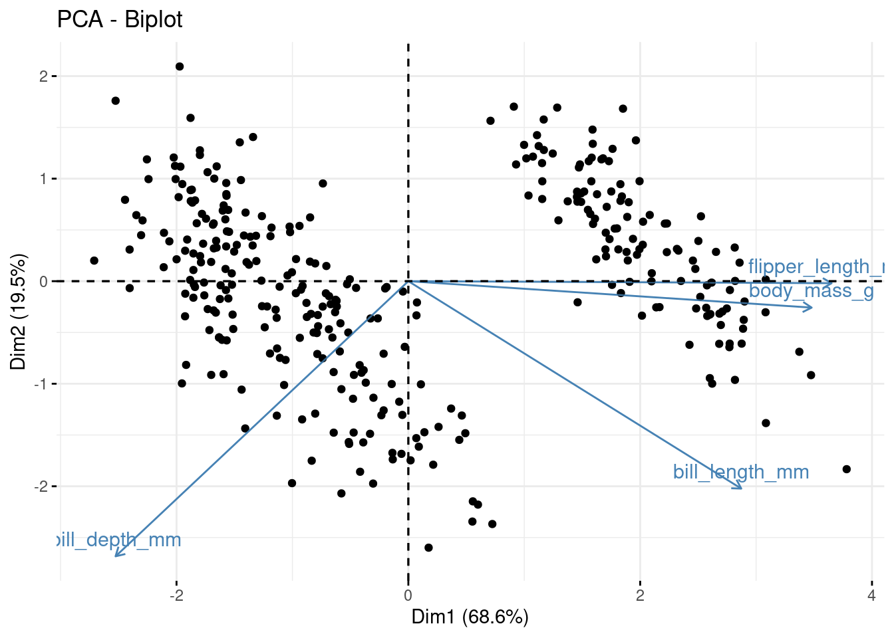
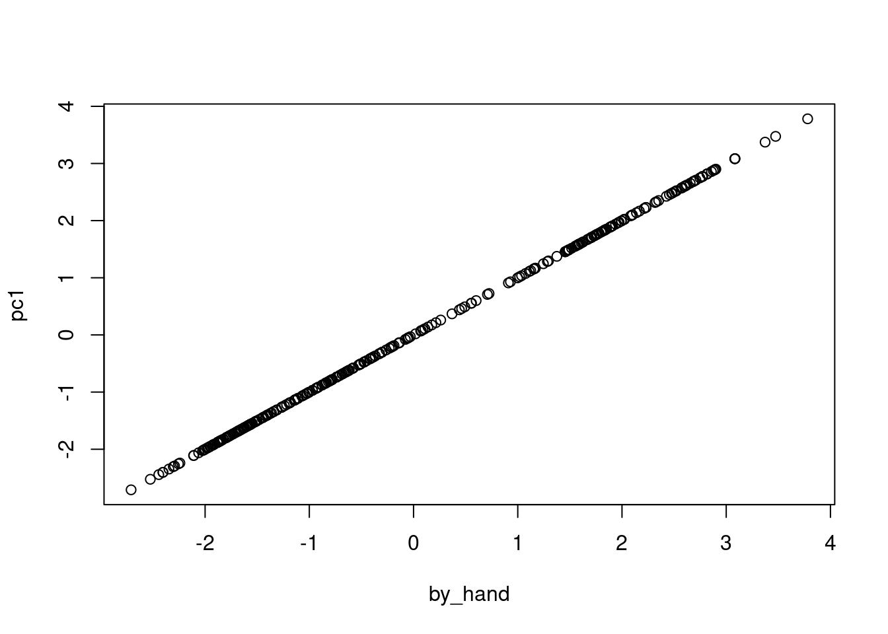
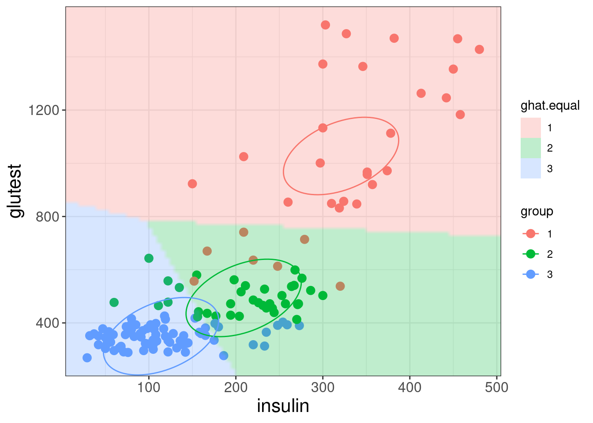

Linear Discriminant Analysis (LDA)
LDA is a supervised learning technique: The main goal is to predict some feature of interest using sing one or more variables (the predictors)
Example in R
library(tidyverse)
diabetes <- read_csv("https://raw.githubusercontent.com/STATS-UOA/databunker/master/data/diabetes.csv")The data
diabetes$group <- factor(diabetes$group)
diabetes
## # A tibble: 144 × 7
## id relwt glufast glutest steady insulin group
## <dbl> <dbl> <dbl> <dbl> <dbl> <dbl> <fct>
## 1 1 0.81 80 356 124 55 3
## 2 3 0.94 105 319 143 105 3
## 3 5 1 90 323 240 143 3
## 4 7 0.91 100 350 221 119 3
## 5 9 0.99 97 379 142 98 3
## 6 11 0.9 91 353 221 53 3
## 7 13 0.96 78 290 136 142 3
## 8 15 0.74 86 312 208 68 3
## 9 17 1.1 90 364 152 76 3
## 10 19 0.83 85 296 116 60 3
## # ℹ 134 more rowsSome variables can predict group of a patient
ggplot(reshape2::melt(diabetes, id.vars = c("id", "group")),
aes(x = value, col = group)) +
geom_density() + facet_wrap( ~variable, ncol = 1, scales = "free") +
theme(legend.position = "bottom")
Possible classification rules?
ggplot(diabetes, mapping = aes(x = insulin, y = glutest)) +
theme_bw() +
geom_point(aes(colour = group), size = 3) +
labs( x = "insulin" , y = "glutest") +
theme(axis.title = element_text( size = 16),
axis.text = element_text(size = 12))
Carrying out LDA
Some similarity to regression
library(MASS)
diabetes_lda <- lda(group ~ insulin + glutest, data = diabetes)
diabetes_lda
## Call:
## lda(group ~ insulin + glutest, data = diabetes)
##
## Prior probabilities of groups:
## 1 2 3
## 0.2222222 0.2500000 0.5277778
##
## Group means:
## insulin glutest
## 1 320.9375 1027.3750
## 2 208.9722 493.9444
## 3 114.0000 349.9737
##
## Coefficients of linear discriminants:
## LD1 LD2
## insulin -0.004463900 -0.01591192
## glutest -0.005784238 0.00480830
##
## Proportion of trace:
## LD1 LD2
## 0.9677 0.0323Components of diabetes_lda
diabetes_lda$priorgives the prior probabilities of belonging to each group. By default these reflect the proportions of membership in the data:
prop.table(table(diabetes$group))
##
## 1 2 3
## 0.2222222 0.2500000 0.5277778–> randomly chosen subject has probability 0.52 of coming from group 3
diabetes_lda$meangives the means of each predictor in each group:

Proportion of Tracegives the percentage separation achieved by each discriminant functiondiabetes_lda$scalingcontains the linear discriminant functions (i.e., the linear combination of variables giving best separation between groups):
diabetes_lda$scaling
## LD1 LD2
## insulin -0.004463900 -0.01591192
## glutest -0.005784238 0.00480830i.e.,
LD1: \(-0.00446 \times \text{insulin} - 0.00578 \times \text{glutest}\)
LD2: \(-0.01591 \times \text{insulin} + 0.00481 \times \text{glutest}\)
How well does LDA do on training data?
ghat <- predict(diabetes_lda)$class
table(prediced = ghat, observed = diabetes$group)
## observed
## prediced 1 2 3
## 1 25 0 0
## 2 6 24 6
## 3 1 12 70The missclassification rate is therefore
mean(ghat != diabetes$group)
## [1] 0.1736111Prediction
diabetes.pred <- predict(diabetes_lda)
str(diabetes.pred)
## List of 3
## $ class : Factor w/ 3 levels "1","2","3": 3 3 3 3 3 3 3 3 3 3 ...
## $ posterior: num [1:144, 1:3] 0.00000104 0.00000106 0.00000247 0.00000326 0.00000477 ...
## ..- attr(*, "dimnames")=List of 2
## .. ..$ : chr [1:144] "1" "2" "3" "4" ...
## .. ..$ : chr [1:3] "1" "2" "3"
## $ x : num [1:144, 1:2] 1.62 1.61 1.42 1.37 1.29 ...
## ..- attr(*, "dimnames")=List of 2
## .. ..$ : chr [1:144] "1" "2" "3" "4" ...
## .. ..$ : chr [1:2] "LD1" "LD2"$class: predicted group for each observation$posterior: probability of falling into each group$x: matrix with 2 columns one for each LD score
Output
- Every possible point is classified to one of three groups
- The divisions between groups are linear (Linear Discriminant Analysis)

The three ellipses represent the class centres and the covariance matrix of the LDA model. Note there is only one covariance matrix, which is the same for all three classes. This results in
- the sizes and orientations of the ellipses being the same for the three classes (only their centres differ)
- the ellipses represent contours of equal class membership probability.
A key assumption of LDA is that the correlations between variables are the same in each group (i.e., common covariance matrix).
Recall that, by default, the prior probabilities are the initial proportions. What if we set equal prior probabilities?
The confusion matrix/missclassification rate:
equal.ghat <- predict(diabetes_lda, prior = rep(1,3)/3)$class
table(predicted = equal.ghat,observed = diabetes$group)
## observed
## predicted 1 2 3
## 1 25 0 0
## 2 7 28 9
## 3 0 8 67
## missclassification rate
mean(equal.ghat != diabetes$group)
## [1] 0.1666667There are now 8 cases classified as Group 3 with prior weights classified as Group 2 with equal weights \(\rightarrow\) bias towards group with larger initial size.
